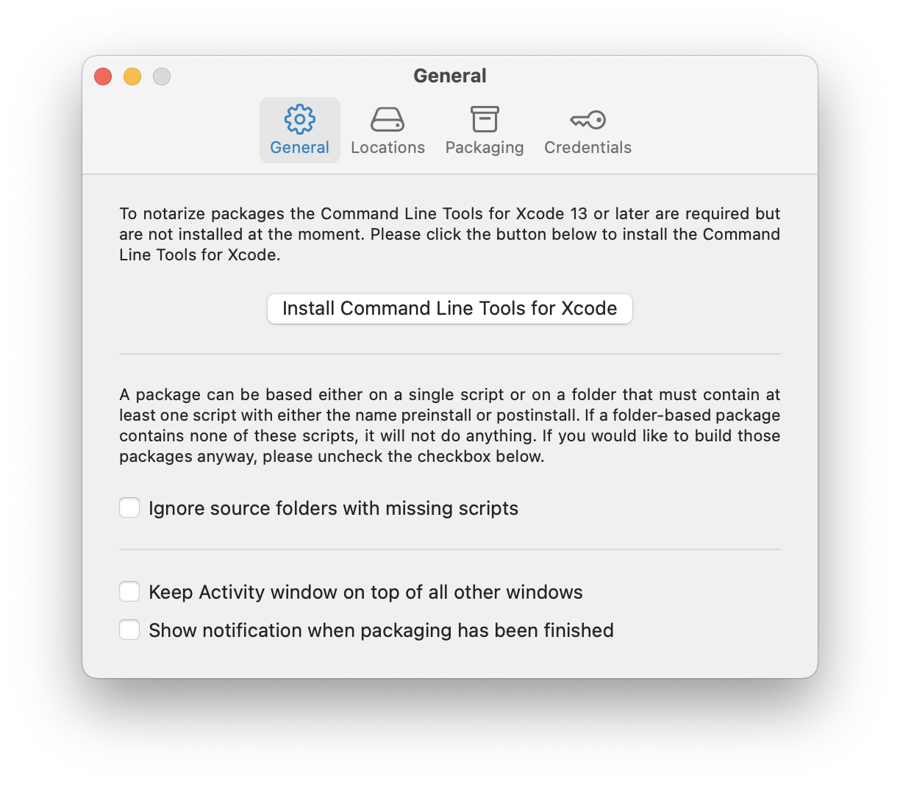
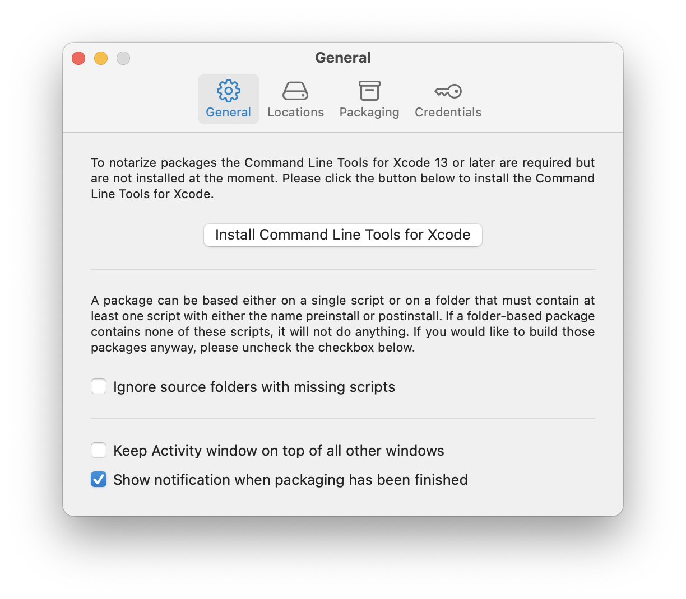

Script2Pkg
Script2Pkg
Script2Pkg
Notifying about new packages
To configure notifications about new packages following their creation, use the following procedure:
1. Go to the Script2Pkg menu and select Settings…

2. Select the General option.

3. To enable notifications, select the Show notification when packaging has been finished option.

With the Show notification when packaging has been finished option enabled, creation of new packages will include a notification from Notification Center similar to the one shown below.
Reverting to Default Settings
To reset back to the default settings, de-select the Show notification when packaging has been finished option.